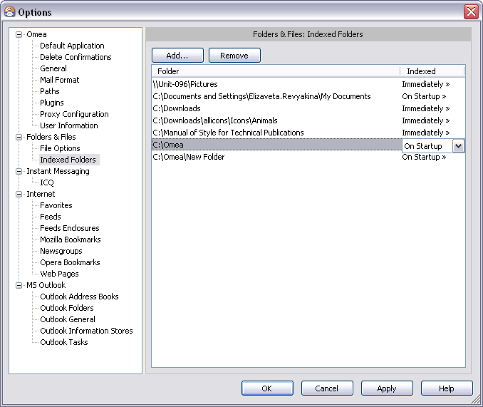

Indexed Folders
You can access this option from the Main menu: Tools | Options: Folders & Files: Indexed Folders
This option category is where you specify which of your computer’s folders are to be indexed, and when indexing should occur for each folder. You can also mark specific folders as excluded from indexing.
Indexed Folders options in the Options dialog
Controls
The controls for this option category enable you to view a list of indexed and excluded folders, add folders to or remove folders from the list, and set the indexing option for each folder in the list.
Add Button
Enables you to add an existing folder to the list of indexed folders, or create a new folder and add it to the list. Clicking this button launches the Browse for Folder dialog, in which you select or create the folder you want to add to the indexed folders list.
When you add a folder, all subfolders it contains (if any) are also included in the index. Any new subfolders you create in the future will also be indexed automatically. If you want to exclude a specific subfolder from indexing, you can do so. See Excluding Folders from Indexing, below.
Remove Button
Removes the currently selected folder from the list of indexed folders.
If you remove the wrong folder by accident you can either click the Cancel button, or you can use the Add button and add the folder again. Note that if you choose Cancel, you will lose any other changes you have made since you opened the Options dialog.
Folders List
This list shows the folders currently selected for indexing. It has 2 columns:
- Folder: shows the folders currently selected for indexing, one folder per line.
- Indexed: shows the current indexing option for the folder in the Folder column. Each line of the Indexed column contains a drop-down list of the indexing options. For more information on indexing options, see Indexing Options, below.
When you add a new folder to the list, the indexing option for it is set to On startup by default. If you want a different indexing option for the newly added folder, use the drop-down list on the appropriate line to select a different option.
Indexing Options
The indexing option setting controls how/when Omea indexes each folder (and its subfolders). The options are as follows.
Immediately
Any changes to the folder tree’s content (additions, deletions, etc.) will be indexed immediately as they happen.
On Startup
Any changes to the folder tree’s content (additions, deletions, etc.) will be indexed next time you start Omea.
Never
The selected folder and everything it contains (files, subfolders) will not be indexed by Omea and will not be visible or accessible in Omea. The folder and its contents still reside in the Windows file system... nothing is removed from disk.
Including or Excluding Specific Folders
When you set an indexing option on a folder, the setting applies to that folder and all sub-folders it may contain, including sub-folders of the sub-folders down to the lowest level in the hierarchy.
Applying a Different Indexing Option to a Subfolder
If you want a different indexing option applied to some subfolder of one of the folders in the list of indexed folders, you need to add that specific folder to the list and set the desired indexing option for it.
Example
Suppose you have already added your C:\My Documents folder and applied the On Startup indexing option to it.
However, you have a subfolder C:\My Documents\Correspondence that you want to to have indexed immediately as its contents changes.
To do that:
- Add the
C:\My Documents\Correspondencefolder to the list using the Add button - With the
C:\My Documents\Correspondencefolder selected in the list, select the Immediate option in the drop-down list in the Indexed column.
Excluding a Specific Folder from Indexing
You can specifically exclude any folder from indexing, whether it is a top-level folder or some subfolder. To do this, you need to add the specific folder to the list of indexed folders and apply the indexing option Never to it.
Example
Suppose you have already added your C:\My Documents folder. However, you have a subfolder C:\My Documents\Personal Stuff
that you want to exclude from indexing by Omea.
To do that:
- Add the
C:\My Documents\Personal Stufffolder to the list using the Add button - With the
C:\My Documents\Personal Stufffolder selected in the list, select the Never option in the drop-down list in the Indexed column.
See also: